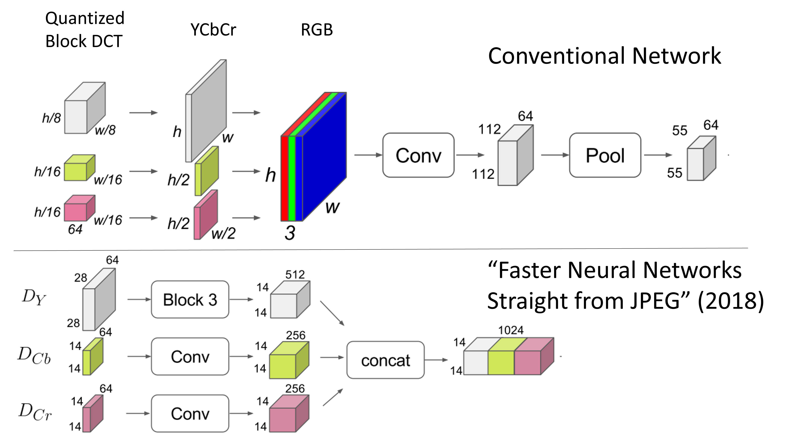
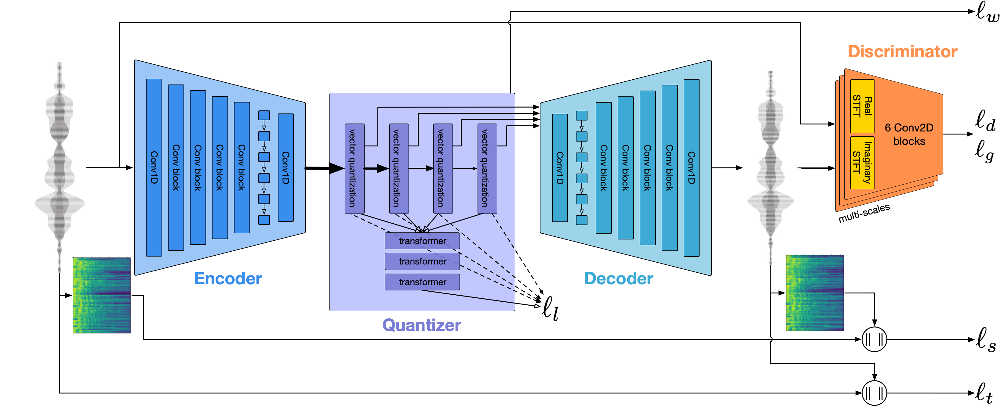

Lossy Compression and Learning¶
Lossy compression¶
Most data are stored using lossy formats (MP3, JPEG)
1-4 bit subband quantization is typical
~1.5 bits per sample/pixel after entropy coding

Conventional Training Procedure¶
Still suffers from all of the downsides of lossy compression
Don’t get any of the benefits of smaller representation!

Training on transformed data¶
Reduce size and number of initial convolutional layers by training on DCT coefficients
Input size remains the same (Quantization of transform coefficients ignored)

Training on transformed data¶

Low precision training¶
bfloat16 (standardized in 2018)
FP8 (E4M3 and E5M2, standardized in 2022)
Fewer than 8 bits requires radical changes to training procedures
Still not able to get any benefits of lossy encodings (1-4 bits per sample)
Conventional approach¶
Decode image and convert to floating point
Size of input layer: \(224 \times224 \times 3 \times 32\) bits per image
For batch size of 128:
13 GB feature memory
497 GFLOPs
Training on quantized data¶
Each transform coefficient only contains about 2 bits instead of 8
“Replace” each 2x2 blocks of 2-bit transform coefficients with a single high precision input
Size of input layer: \(112 \times 112 \times 3 \times 32\) bits per image
3 GB Feature memory (down from 13)
131 GFLOPs per pass (down from 497)
How do we “replace” several low-precision inputs with a single high precision input?
Doesn’t even work for most codecs since each subband has different quantization!
Training on quantized data¶
How do we “replace” several low-precision inputs with a single high precision input?
Naive approach: \(y = (x_1) + (x2 << 2) + (x2 << 4) (x2 << 6)\)
Amounts to creating a categorical variable
Standard approach to training on categorical variable is to one-hot encode
We’re back to where we started!
Binarized neural networks¶
Proposed in 2016 to reduce memory consumption
Replace some floating point arithmetic with bit-wise operations
Binary Weight Network (BWN): only the kernels are quantized
Binary Activation Network (BAN): only the inputs are binarized
Binary Neural Network (BNN): both the inputs as well as the kernels are binarized
First layer of BNN is typically represented at full precision
Gives us an opportunity to utilize low precision of lossy coded data
Lossy compression standards¶
Standard |
Introduced |
Signal |
Transform |
Quantization |
|---|---|---|---|---|
MPEG Layer III |
1991 |
Audio |
block DCT and FFT |
Perceptual quantization vector |
JPEG |
1992 |
Image |
block DCT |
Perceptual quantization matrix |
JPEG 2000 |
2000 |
Image |
Separable Wavelet |
Uniform scalar quantization |
CELT/Opus |
2011 |
Audio |
block DCT |
Pyramid vector quantization |
HEVC |
2013 |
Image |
block DCT and DST |
Perceptual quantization matrix |
Soundstream |
2021 |
Audio |
Learned |
Residual vector quantization |
Encodec |
2022 |
Audio |
Learned |
Residual vector quantization |
Audio classification: baseline¶
Dataset: Speech commands
one second speech segments of 8 possible words
‘stop,’ ‘down,’ ‘no,’ ‘right,’ ‘go,’ ‘up,’ ‘yes,’ ‘left’
Baseline model:
Input size: \(128 \times 128\) time-frequency distribution represented at full precision
119.52 MiB Feature size
2.26 GFLOPs per pass
Achieves test accuracy of about 84%
Audio classification: VQ + BNN¶
Encode 2x2 time-frequency blocks via vector quantization
Use mini-batch k-means to learn codebook of 16 vectors (4 bits)
Compression ratio of 16:1 (before any entropy coding)
Input size: \(64 \times 64 \times 4\) binary codes
Audio classification: VQ + BNN¶
Input size: \(64 \times 64 \times 4\) binary codes
3.74 MiB Feature size
Multiply-accumulate instead of FP
4-way MAC unit uses about 55% of the area of a FP16 FPU
\(4-8 \times\) more power efficient compared to bfloat16
\(>20 \times\) more power efficient compared to FP32
Achieves test accuracy of about 79% (baseline:84%)
Neural compression standards¶
Soundstream (Google, 2021) and Encodec (Meta, 2022)

Audio classification: Neural Compression + BNN¶
Input size: \(8 \times 75 \times 10\) binary codes
1.67 MiB Feature size
111M MACs per pass
Test accuracy of 58%
References¶
Faster Neural Networks Straight from JPEG
Deep Residual Learning in the JPEG Transform Domain
Ultra-Low Precision 4-bit Training of Deep Neural Networks
Estimates of memory consumption and FLOP counts for various convolutional neural networks